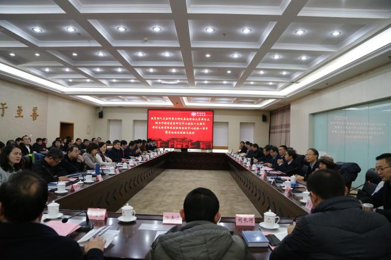

- 05-09.2020 黄河文明省部共建协同创新中心2020年硕士招生复试方案

- 
- 1
- 2
- 3

- 文明传承 李振宏：《论语》“四十而不惑，五十而知天命”章是伪作
- 夏商周考古 中华5000多年文明的考古实证
- 国家治理 宋丙涛：文明测度、治理绩效与公共经济的共享特征
- 文明传承 黄河文化的历史意义与时代价值


【黄河文明省部共建协同创新中心】 地址：中国 河南 开封/金明大道 | 邮编：475001/475004
版权所有 © 黄河文明省部共建协同创新中心 | 河南大学计算机与信息工程学院 107网站工作室 制作维护